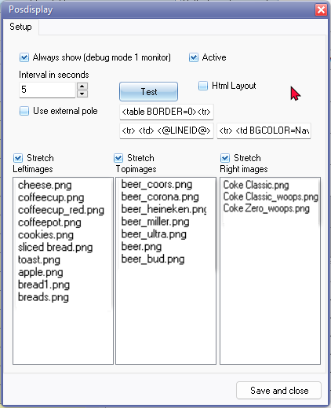
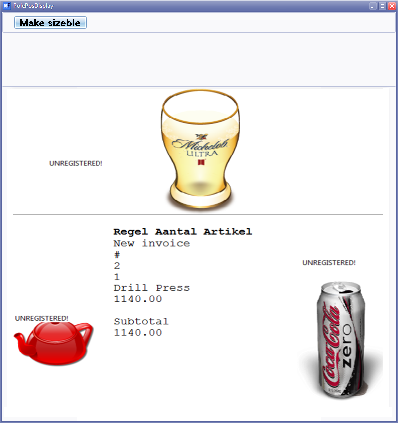

POSDisplay plugin
POSDisplay plugin
|
|
POSDisplay Plugin - Manual - Shop - Licence : Once-off - Documentation : Help topic |

The POS Display plugin enhances the customer experience during checkout by utilizing a second monitor (minimum 600x800 resolution) to display detailed invoices. Customers can easily view their purchases and the corresponding prices per item, as well as the total amount due.
Additionally, the plugin enables you to showcase product images on the second monitor while customers wait to check out. These images can be set to rotate at specified intervals, attracting attention to special offers or promotions. Rotation options include displaying images at the top, left, or right side of the invoices.
Activate and test POSdisplay
- On the Setup ribbon, select Plugins → Point-of-Sale → PosDisplay. If this plugin is not listed under Plugins → Point-of-Sale, activate it via Tools → Activate plugins.
 - To load images, simply open the folder on the system where your pictures or image files are stored.
- Drag the files to the Left Images, Top Images and Right Image columns.
- Click on the Save and Close button.
Display
